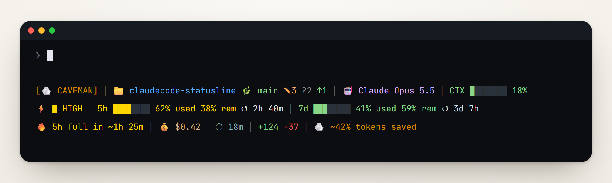

A one-command setup for a richly decorated Claude Code statusline — context, rate limits with a burn-rate warning, session cost, git status, five themes — with Caveman mode baked in.

Start from Default (the compact classic line) or Install all, then toggle segments, reorder them with ◀ ▶ and pick a theme. The matching SL_* env vars update below — that is exactly what the installer writes.
A compact line by default, color-coded by severity. Cards tagged extra are opt-in: pick Install all (or choose them in Custom) to get them.
Shows the active mode. Hidden when off.
Folder, branch, changed / untracked files, ahead / behind, conflicts. One cheap git call.
Which model is answering right now.
Usage bar going green → yellow → red.
Shown only when the model supports it.
Spent, remaining, and time until reset.
Both values colored independently by severity.
Shows up only when your current pace will hit a limit before it resets — and tells you when.
Session cost (API-equivalent on subscriptions), duration, and lines added / removed.
Optional live estimate of what Caveman saves.
Needs Claude Code and Node.js 18 or newer. No bash, jq or python3 required. git is optional (branch and git status).
Already using it? Don't reinstall from scratch — use Update. It keeps your segments, order and theme, so the line looks the same afterwards. Breaking changes.
git clone https://github.com/FahimFBA/claudecode-statusline.git cd claudecode-statusline chmod +x install.sh ./install.sh
Then restart Claude Code. Choose 1) Default (compact classic line), 2) Custom (type the component numbers in the order you want them, e.g. 2 3 4 6 7 10 13, or all) or 3) Install all (every segment plus git status). Each asks for a theme and shows a live preview before writing anything.
~/.claude/hooks/, and removes a stale v1 caveman-statusline.sh.~/.claude/settings.json — existing file is backed up to settings.json.bak, only this project's entries are touched, your other hooks and config survive, re-running is safe.claude plugins install caveman --marketplace caveman.Safe to run any time, and again after every git pull. The installer shows what is installed (Installed: v1.x → this version: v2.0.0), backs up settings.json first, and touches only this project's entries.
cd claudecode-statusline git pull ./install.sh # choose "4) Update" (the default) ./install.sh --update # or: no questions asked
Then restart Claude Code. Check the installed version with node ~/.claude/hooks/caveman-statusline.js --version.
Your SL_* settings (hidden segments, SL_ORDER, SL_THEME), your other hooks, permissions, model and every other key in settings.json.
The scripts in ~/.claude/hooks/. A leftover v1 caveman-statusline.sh is removed. Running Update twice changes nothing.
Nothing visible changes. The v2 extras — git status, burn rate, cost, time, lines — are off by default. Say y when asked to turn them on, or re-run and pick Install all later.
To touch a settings.json that is not valid JSON. It stops and changes nothing.
Two backups sit next to settings.json: .bak (before the latest run, overwritten each run) and .pre-v2.bak (written once when you first upgrade from 1.x, never overwritten).
# macOS / Linux cp ~/.claude/settings.json.pre-v2.bak ~/.claude/settings.json git checkout v1.0.1 && ./install.sh # old scripts back # Windows (PowerShell) Copy-Item "$env:USERPROFILE\.claude\settings.json.pre-v2.bak" "$env:USERPROFILE\.claude\settings.json" -Force git checkout v1.0.1; powershell -ExecutionPolicy Bypass -File install.ps1
Re-run the installer and pick option 2, or set env vars in the statusLine command of ~/.claude/settings.json.
| Env var | Default | Effect |
|---|---|---|
SL_ORDER=all | unset | Everything: all 12 segments plus git status. What "Install all" writes |
SL_ORDER=a,b,c | unset | Show only these segments, in this order. Keys: caveman project model ctx effort 5h 7d burn cost time lines savings. Add git for git status markers |
SL_BURN=1 SL_COST=1 SL_TIME=1 SL_LINES=1 SL_GIT=1 | off | Switch a single extra on without listing everything (ignored when SL_ORDER is set) |
SL_THEME=nord | default | default · nord · gruvbox · light · mono |
NO_COLOR=1 | unset | No colors at all |
SL_GIT=0 | Hide git status markers, keep the branch (skips git status) | |
SL_CAVEMAN=0 | on | Hide caveman badge |
SL_PROJECT=0 | on | Hide project + branch + git status |
SL_MODEL=0 | on | Hide model name |
SL_CTX=0 | on | Hide context window bar |
SL_EFFORT=0 | on | Hide effort level |
SL_5H=0 | on | Hide hourly rate limit |
SL_7D=0 | on | Hide weekly rate limit |
SL_BURN=0 | on | Hide burn-rate warning |
SL_COST=0 | on | Hide session cost |
SL_TIME=0 | on | Hide session time |
SL_LINES=0 | on | Hide lines changed |
SL_SAVINGS=0 | on | Hide token savings |
How they combine: no SL_ORDER → the classic set (extras only with their SL_<X>=1); SL_ORDER=all → everything; SL_ORDER=a,b,c → exactly those. Then any SL_<SEGMENT>=0 removes what it names.
SL_THEME=gruvbox SL_ORDER=model,ctx,5h,burn \ node ~/.claude/hooks/caveman-statusline.js --demo
Default Caveman mode:
export CAVEMAN_DEFAULT_MODE=lite # lite | full | ultra | off
# or ~/.config/caveman/config.json
{ "defaultMode": "lite" }Terse replies, same technical substance. Powered by JuliusBrussee/caveman.
| Command | Effect |
|---|---|
/caveman | Activate full mode |
/caveman lite | Fewer drops |
/caveman ultra | Max compression |
/caveman off | Deactivate |
/caveman-stats | Session usage + savings |
/caveman-stats --all | Lifetime stats |
| Level | Behaviour |
|---|---|
lite | Drop articles and filler, keep sentence structure |
full | Fragments OK, short synonyms |
ultra | Minimal connectives |
Run from your clone. Removes the hook files and only the settings.json entries this project added — your other hooks, plugins and config stay (the old file is saved as settings.json.bak).
macOS / Linux
./uninstall.sh # asks first ./uninstall.sh --keep-plugin # leave the caveman plugin entries
Windows (PowerShell)
powershell -ExecutionPolicy Bypass -File uninstall.ps1 powershell -ExecutionPolicy Bypass -File uninstall.ps1 -Yes -KeepPlugin
To also remove the plugin itself: claude plugins uninstall caveman.